A detailed summary of "Physics of Language Models: Part 1, Learning Hierarchical Language Structures" by Zeyuan Allen-Zhu and Yuanzhi Li (ICML 2024)
Transformers trained on synthetic context-free grammars (CFGs) don't just memorize patterns -- they build internal parse trees and implement a form of dynamic programming through their attention mechanisms. This paper provides the first controlled, mechanistic evidence that autoregressive language models learn genuine hierarchical reasoning, not just surface-level statistics.
Large language models like GPT-4 produce remarkably coherent text, but a fundamental question persists: do they actually understand the hierarchical structure of language, or are they sophisticated pattern matchers?
Natural language is deeply hierarchical. A sentence like "The cat that chased the mouse that ate the cheese ran away" requires tracking nested dependencies across multiple levels. In formal terms, this structure is captured by context-free grammars (CFGs), where production rules recursively expand non-terminal symbols into terminal words. Every valid sentence has an underlying parse tree -- and generating grammatically correct text requires implicitly constructing (or at least respecting) that tree.
The challenge is that next-token prediction in a hierarchical language is fundamentally different from simple pattern matching. Consider a sequence generated by a CFG with deep nesting: the correct next token at any position may depend on structural information dozens or hundreds of tokens back. A flat n-gram model would fail catastrophically. The question is whether transformers fail too, or whether they discover some form of structural reasoning.
Prior work has approached this from two directions. Formal language studies (e.g., Deletang et al., 2023) tested neural networks on the Chomsky hierarchy but used toy-scale tasks. Structural probing studies (e.g., Hewitt and Manning, 2019) found syntactic information in pretrained models but couldn't control what structure was available to learn. Mechanistic interpretability work (e.g., Wang et al., 2022; Olsson et al., 2022) reverse-engineered specific circuits in transformers but focused on simple behaviors like "induction heads" rather than full hierarchical parsing.
What was missing was a controlled study at realistic scale that could answer: can transformers learn deep hierarchical structure, and if so, how?
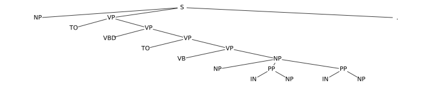
Allen-Zhu and Li designed a family of synthetic context-free grammars with precisely controlled properties, creating an ideal testbed that isolates hierarchical reasoning from lexical semantics. Their CFGs have:
Each CFG variant (cfg3b, cfg3f, cfg3g, cfg3h, cfg3i) tests a different structural property -- varying rule lengths, hierarchy depths, and terminal distributions. This systematic design means any pattern the model learns must reflect genuine structural understanding rather than surface shortcuts.
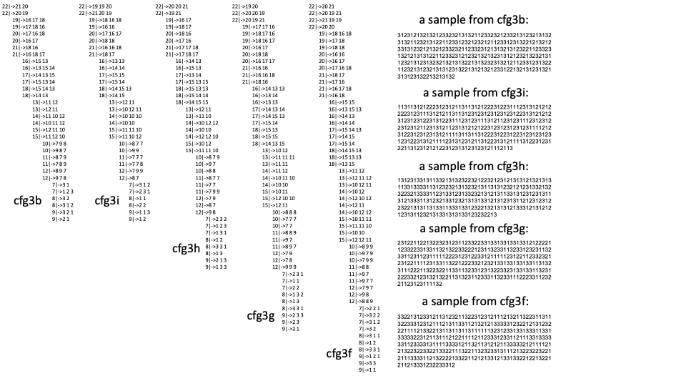
The paper introduces precise notation for the hierarchical structure. For a sequence $x = (x_1, x_2, \ldots, x_n)$ generated by a CFG:
These quantities are the ground truth the paper probes for in the transformer's hidden states.
Four model variants were compared, all based on the GPT-2-small architecture (12 layers, 12 attention heads, 768 hidden dimensions, ~86M parameters):
| Model | Positional Encoding | Direction | Key Property |
|---|---|---|---|
| GPT-2 (abs) | Absolute | Autoregressive | Vanilla GPT-2 baseline |
| GPT-2 (rel) | Relative (DeBERTa-style) | Autoregressive | Relative distance bias in attention |
| GPT-2 (rot) | Rotary (RoPE) | Autoregressive | Rotation-based position encoding |
| DeBERTa | Relative | Bidirectional (encoder) | Encoder baseline |
The critical architectural variable turned out to be the positional encoding scheme, not the model size or depth.
The paper evaluates the trained models on three complementary axes:
This measures the average per-token divergence between the ground-truth conditional distribution $p^*$ and the model's learned distribution $p$, averaged over positions and sequences. Low KL means the model has learned the full probabilistic structure, not just the most-likely outputs.
The headline result is striking: GPT-2 with relative or rotary positional embeddings achieves near-perfect generation accuracy across all CFG variants. The model generates grammatically valid sequences, produces diverse outputs (verified via a birthday paradox duplicate-detection test), and closely matches the ground-truth probability distribution.
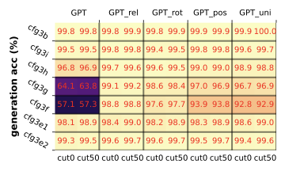
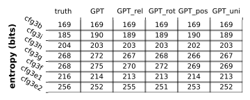
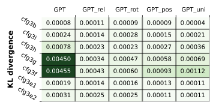
The failure of absolute positional embeddings is notable: they encode position as a fixed vector added to each token, which doesn't naturally capture relative distances between constituents. Relative and rotary encodings, which represent distances between positions rather than absolute locations, align much better with the recursive, distance-dependent structure of CFGs.
Key quantitative findings:
The most surprising finding comes from linear probing the transformer's hidden states. A linear probe is a simple linear classifier applied to the model's internal representations -- if a linear probe can recover some information, it means that information is explicitly encoded in the representation (not buried in a complex nonlinear manifold).
The probing equation is:
Here, $E_k(x)$ is the hidden state at position $k$ in the last transformer layer, $f_r$ is a per-head probing function, and $w_{r, i \to k}$ are learned weights. The probe predicts the full NT ancestor index vector at each position -- essentially recovering the parse tree from the hidden representation.
Result 4 shows that this linear probe achieves near-perfect accuracy on the GPT-2 models with relative/rotary PE. The transformer's last-layer hidden states almost perfectly encode the full non-terminal ancestor information at every position. Remarkably, encoder models (DeBERTa) cannot encode this information -- suggesting that the autoregressive training objective is crucial.
Result 5 goes further: the NT information is not distributed globally but is concentrated locally at NT boundary positions. A restricted probe that only looks at positions $i \pm 1$ (the immediate neighbors of NT boundaries) recovers almost as much information as the full probe:
With $\delta = 1$, accuracy remains high. This means the transformer has learned to concentrate parse-tree information at structurally meaningful positions -- the boundaries between constituents.
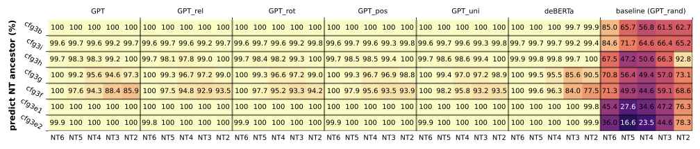
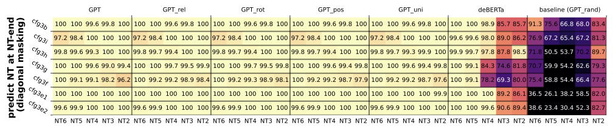
The deepest insight of the paper comes from analyzing the attention patterns themselves. The authors discover four progressively more specific patterns that collectively reveal the transformer is implementing a form of CKY-style dynamic programming:
Result 6 -- Position-based attention: Different heads attend at different distance scales, creating a multi-resolution view of the sequence. Some heads focus on nearby tokens (local structure), while others reach across the full sequence (long-range dependencies).
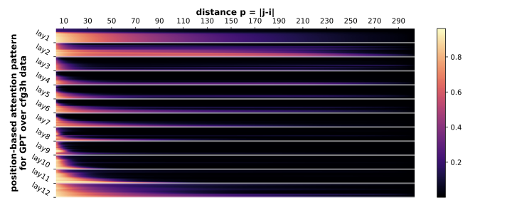
Result 7 -- Boundary-biased attention: Attention is disproportionately directed toward tokens at NT boundaries. These boundary positions are the structurally important landmarks in the parse tree.
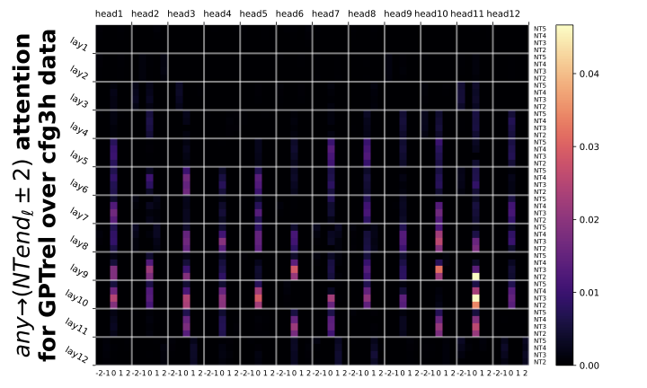
Result 8 -- Same-level NT-end attention: When both the source and target positions are NT boundaries, attention is highest when they are at the same NT level -- exactly the pattern needed for sibling-to-sibling communication in a parse tree.
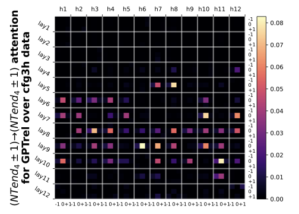
Result 9 -- Adjacent NT-end attention: The most refined pattern shows attention concentrating between adjacent NT-end token pairs: siblings (same level), children (deepest level), and parent-level boundaries. This is precisely the information flow needed by the CKY parsing algorithm.
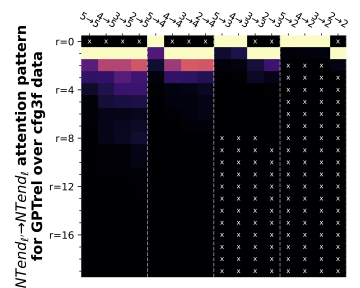
These attention patterns collectively mirror the CKY (Cocke-Younger-Kasami) algorithm, the classical dynamic programming algorithm for CFG parsing. In CKY, to parse a span $(i, j)$ with non-terminal $a$, the algorithm checks all split points $k \in (i, j)$ and combines sub-parses. The paper formalizes this connection:
This links the transformer's learned NT boundary indicators ($\mathbf{1}_\ell$) and NT ancestor symbols ($s_\ell$) to classical CKY parsing recurrences. The attention patterns implement the information propagation that CKY achieves through its table lookups -- but the transformer discovers this algorithm from data, without being told about dynamic programming.
The paper extends the framework in two important directions:
Implicit CFGs (Result 10): In real language, "non-terminal" categories correspond to bags of interchangeable words (all nouns, all verbs), not single tokens. The authors test "implicit CFGs" where each terminal symbol is replaced by a bag of words. The transformer still learns the latent hierarchical structure -- hidden embeddings for tokens in the same NT category become divergence-correlated, even though the model never sees explicit category labels.
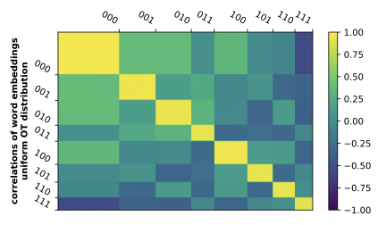
Robustness (Results 11--13): When training data is corrupted (15% of tokens randomly replaced), the transformer exhibits a fascinating "mode switch" behavior:
| Input Condition | Model Behavior | Validity |
|---|---|---|
| Clean prefix | Correct generation | Grammatically valid |
| Corrupted prefix | Random generation | Length-valid but not grammatically correct |
| Mixed prefix | Length-valid strings | Partial structure preserved |
At low temperatures ($\tau \leq 0.2$), the model recovers robust generation even after corruption. This mode switch suggests the transformer maintains separate "modes" for structured and unstructured generation, switching between them based on the input distribution.
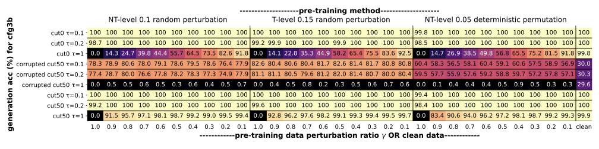
This work provides the strongest mechanistic evidence to date that transformers learn genuine hierarchical reasoning, not just statistical correlations. Three findings are particularly significant:
Several important caveats apply:
This paper is Part 1 of the "Physics of Language Models" series by Allen-Zhu and collaborators, which aims to build a rigorous, experimentally-grounded theory of how language models work:
| Part | Topic | Key Question |
|---|---|---|
| 1 (this paper) | Hierarchical structure (CFGs) | Can transformers parse? |
| 2.1--2.2 | Grade-school math | Can transformers reason step-by-step? |
| 3.1--3.3 | Knowledge storage and manipulation | How do transformers store facts? |
| 4.1 | Architecture design | What makes an architecture effective? |
The series represents a shift from treating LLMs as black boxes to building a "physics" of their behavior -- understanding the fundamental mechanisms through controlled experiments, much as physicists study simplified systems to discover universal laws.
The paper suggests several natural next steps:
Project page: physics.allen-zhu.com/part-1 | 100-minute talk: YouTube | ICML 2024 tutorial: YouTube